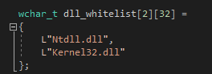
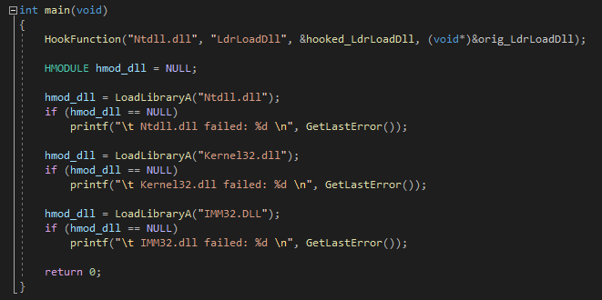
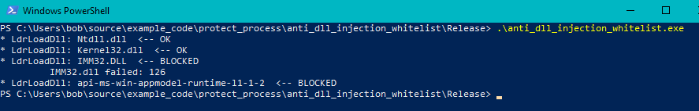

# Hook LdrLoadDll
LdrLoadDll is an undocumenented function from Ntdll.dll that loads DLLs into the process.
It gets called by
LoadLibrary.
http://undocumented.ntinternals.net/index.html?page=UserMode%2FUndocumented%20Functions%2FExecutable%20Images%2FLdrLoadDll.htmlBy hooking LdrLoadDll, you can monitor what DLLs are being loaded into your process and block or allow them based on a list.
You coud choose to blacklist items - i.e. block
aimbot.dll - or whitelist items - i.e. allow
Kernel32.dll.
I would recommend a whitelist as this allows you to control exactly what is allowed.
ALL CREDIT GOES HERE:
•
https://gist.github.com/bats3c/59932dfa1f5bb23dd36071119b91af0fNOTE:
This will only block DLLs being loaded into your process AFTER your process has initialised.
This is because we can only install our hook on LdrLoadDll after our process has initialised.
(I'm not sure if this blocks AppInit_DLLs or not)
## Code
Compiled as Release x86 on Windows 10 x64 2004.
This code is x86 only because the inline hook function is for x86,
but with an x64 hooking technique this code would still work.
You can ignore the HookFunction code, the relavant part is the LdrLoadDll hook code.
/*
Hook ntdll!LdrLoadDll and compare the DLL being loaded to those in the whitelist.
If not present, block the DLL from being loaded.
This will only block DLLs being loaded after the process is initialised (so I'm not sure if it blocks AppInit_DLLs or not).
This code is x86 only because the hooking method is x86.
*/
#include <stdio.h>
#include <Windows.h>
#include <winternl.h>
wchar_t dll_whitelist[2][32] =
{
L"Ntdll.dll",
L"Kernel32.dll"
};
int dll_whitelist_size = sizeof(dll_whitelist) / sizeof(dll_whitelist[0]);
NTSTATUS (NTAPI* orig_LdrLoadDll)(IN PWCHAR PathToFile OPTIONAL, IN ULONG Flags OPTIONAL, IN PUNICODE_STRING ModuleFileName, OUT PHANDLE ModuleHandle);
NTSTATUS NTAPI hooked_LdrLoadDll(IN PWCHAR PathToFile OPTIONAL, IN ULONG Flags OPTIONAL, IN PUNICODE_STRING ModuleFileName, OUT PHANDLE ModuleHandle)
{
wchar_t* p_valid_dll = NULL;
BOOL dll_allowed = FALSE;
printf("* LdrLoadDll: %ws ", ModuleFileName->Buffer);
for (int i = 0; i < dll_whitelist_size; i++)
{
p_valid_dll = wcsstr(ModuleFileName->Buffer, dll_whitelist[i]);
if (p_valid_dll != NULL)
{
dll_allowed = TRUE;
break;
}
}
if (dll_allowed == FALSE)
{
printf(" <-- BLOCKED \n");
return STATUS_DLL_NOT_FOUND;
}
printf(" <-- OK \n");
return orig_LdrLoadDll(PathToFile, Flags, ModuleFileName, ModuleHandle);
}
BOOL HookFunction(char* dll_name, char* function_name, void* hooked_function, void** p_orig_function)
{
BOOL okay = TRUE;
BOOL b_ret = FALSE;
HMODULE hmod_dll = NULL;
LPVOID original_function = NULL;
LPVOID trampoline_addr = NULL;
DWORD jmp_originalfunction = 0;
DWORD jmp_trampoline = 0;
DWORD jmp_hook = 0;
DWORD old_protect = 0;
hmod_dll = LoadLibraryA(dll_name);
original_function = GetProcAddress(hmod_dll, function_name);
if (original_function == NULL)
{
printf("\t failed to grab address of %s: %d \n", function_name, GetLastError());
okay = FALSE;
return okay;
}
/*
Allocate trampoline space
Will contain:
- (5 bytes) jmp hook_function
- (5 bytes) 5 bytes from original function
- (5 bytes) jmp original_function + 1
*/
trampoline_addr = VirtualAlloc(NULL, 15, MEM_COMMIT | MEM_RESERVE, PAGE_EXECUTE_READWRITE);
if (trampoline_addr == NULL)
{
printf("\t failed to allocate gatecode space: %d \n", GetLastError());
okay = FALSE;
return okay;
}
// Calculate jumps
jmp_trampoline = ((DWORD)trampoline_addr + 5) - (DWORD)original_function; // relative jump from original function + 0 to trampoline + 10
jmp_originalfunction = ((DWORD)original_function) - ((DWORD)trampoline_addr + 5); // relative jump from trampoline + 5 to original function
jmp_hook = (DWORD)hooked_function - ((DWORD)trampoline_addr + 10) - 5; // relative jump from trampoline + 10 to hooked code
// Construct trampoline
memcpy_s((BYTE*)trampoline_addr, 5, original_function, 5); // Copy first 5 bytes from original function to trampoline space
memcpy_s((BYTE*)trampoline_addr + 5, 1, "\xE9", 1); // Jump to original function + 5 (bypasses the hook)
memcpy_s((BYTE*)trampoline_addr + 6, 4, &jmp_originalfunction, 4);
memcpy_s((BYTE*)trampoline_addr + 10, 1, "\xE9", 1); // Jump to hook code
memcpy_s((BYTE*)trampoline_addr + 11, 4, &jmp_hook, 4);
// Make original function writable
b_ret = VirtualProtect(original_function, 5, PAGE_EXECUTE_READWRITE, &old_protect);
if (b_ret == FALSE)
{
printf("\t failed to make memory writable: %d \n", GetLastError());
okay = FALSE;
return okay;
}
// Overwrite first 5 bytes of original function with jump to trampoline
memcpy_s(original_function, 1, "\xE9", 1);
memcpy_s((BYTE*)original_function + 1, 4, &jmp_trampoline, 4);
b_ret = VirtualProtect(original_function, 5, old_protect, &old_protect);
if (b_ret == FALSE)
{
printf("\t failed to restore original memory protection: %d \n", GetLastError());
okay = FALSE;
return okay;
}
// Set pointer to original function to start of trampoline (trampoline will run function prologue and then jump to original function)
*p_orig_function = trampoline_addr;
FlushInstructionCache(GetCurrentProcess(), original_function, 5); // Not sure if necessarily needed
return okay;
}
int main(void)
{
HookFunction("Ntdll.dll", "LdrLoadDll", &hooked_LdrLoadDll, (void*)&orig_LdrLoadDll);
HMODULE hmod_dll = NULL;
hmod_dll = LoadLibraryA("Ntdll.dll");
if (hmod_dll == NULL)
printf("\t Ntdll.dll failed: %d \n", GetLastError());
hmod_dll = LoadLibraryA("Kernel32.dll");
if (hmod_dll == NULL)
printf("\t Kernel32.dll failed: %d \n", GetLastError());
hmod_dll = LoadLibraryA("IMM32.DLL");
if (hmod_dll == NULL)
printf("\t IMM32.dll failed: %d \n", GetLastError());
return 0;
}
## Demo
In my whitelist is
Ntdll.dll and
Kernel32.dll.
In my program I try to load
Ntdll.dll,
Kernel32.dll, and
IMM32.dllWhen I run my program, we see that
Ntdll.dll and
Kernel32.dll are OK,
but that
IMM32.dll gets BLOCKED because it's not in my whitelist.
